Project 5: Fun With Diffusion Models!
Part A: The Power of Diffusion Models!
Part 0: Setup
Drawing inspiration from the prompts given in the Huggingface Embedding Generators, I decided to try generating the embeddings for 16 prompts (including 'a high quality photo' and the null prompt '') that span different areas like artwork, nature, food/drink, etc.
Below are 3 prompts that I chose to generate images for: 'a watercolor painting of a cityscape', 'a bowl of beef noodle soup', 'a night sky'. I also used a random seed value = 42 this part and the following parts.
Interestingly, I felt that not all the images from using a higher num_inference_steps value at 150 were better than those from using a lower value at 20. That being said, maybe it's difficult to generalize this opinion because some of my prompts (especially when it comes to generating art like watercolors or oil paintings) may be subjective when it comes to determining quality and what makes an image better than another. I think the bowl of beef noodle soup prompt is higher quality at a higher step value because there's more detail/sharpness to the toppings in the soup, as well as a background object (likely a pot containing the soup) on top of the soup itself as the main image. However, for the watercolor painting of a cityscape, I feel like there's a little too much happening in the image (e.g. more city skylines in the background?) compared to the simplicity and neatness of the first iamge. Finally, I don't think there's too much difference in the night sky images, but the second one does look more like a high-res capture using some type of advanced telescope and with more postprocessing coloring than the night sky image at 20 steps, but the first image is by no means bad to me either, considering the faster runtime.
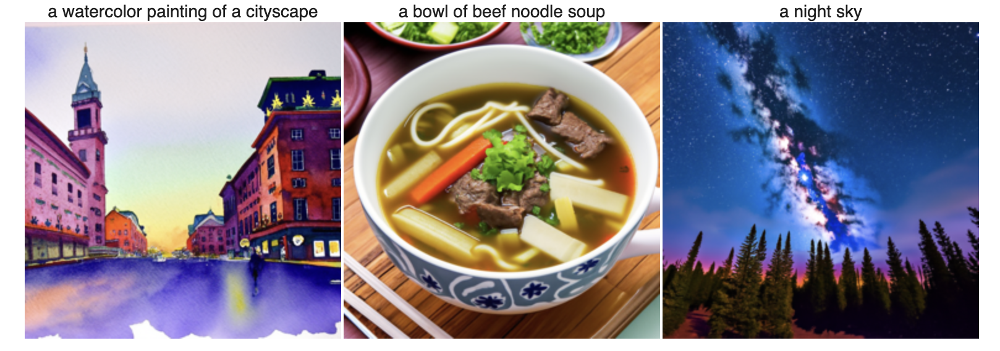
Using num_inference_steps = 20
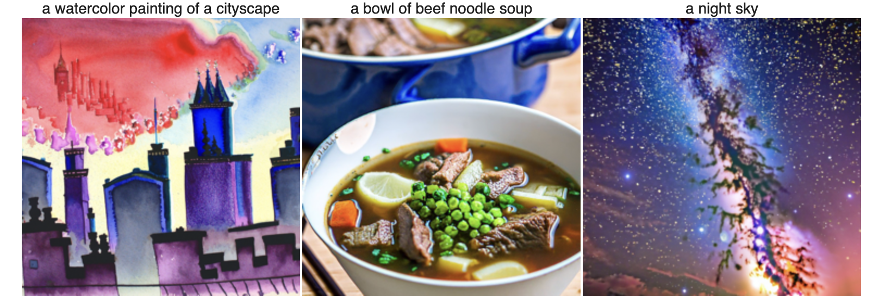
Using num_inference_steps = 150
Part 1: Sampling Loops
1.1 Implementing the Forward Process
To implement the forward process for diffusion, I followed the spec's hints about indexing into the alphas_cumprod
array at index t to retrieve the value of alpha at a specific timestep t. From there, we can also use the given
torch.randn_like function to sample noise from the image for the epsilon value.
Below are images showing the forward diffusion process at the different time steps t = 0, 250, 500, 750.
As expected, we can see that as t increases, the image becomes progressively noisier and less recognizable.
For example, by t = 750, the original image is almost completely noise.
t = 0
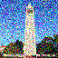
t = 250
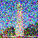
t = 500
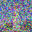
t = 750
1.2 Classical Denoising
To try denoising these images using classical methods, we may use Gaussian blur filtering as suggested by the spec.
Here, we can leverage the torchvision.transforms.functional.gaussian_blur function by calling it as
TF.gaussian_blur(noisy, 5, 1.5) with the parameters for kernel size = 5 and sigma = 1.5. As predicted,
the denoised image still appears rather noisy.
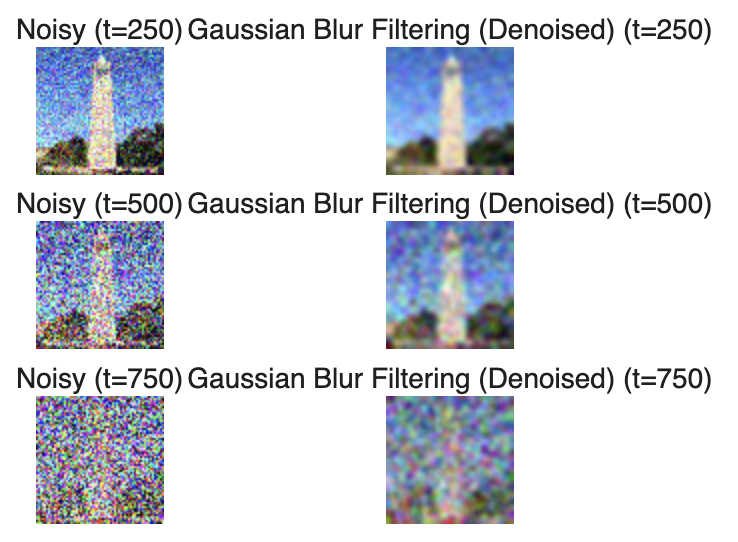
Classical Denoising Result
1.3 One-Step Denoising
For one-step denoising, I first ran my forward process function to add noise to our image. Next, our
pretrained denoiser stage_1.unet can estimate the noise in the new noisy image when we pass our noisy image through.
Then, to remove the noise from the noisy image to obtain an estimate of the original image, we can follow formula
A.2 but rewrite it to solve for our clean image x_0. Starting from formula A.2:
$$
x_t = \sqrt{\bar\alpha_t} x_0 + \sqrt{1 - \bar\alpha_t} \epsilon \quad \text{where}~ \epsilon \sim N(0, 1) \tag{A.2}
$$
We can rewrite this as:
$$
x_0 = \frac{x_t - \sqrt{1 - \bar\alpha_t} \epsilon}{\sqrt{\bar\alpha_t}}
$$
As the spec notes, I also did use the .to(device) and .half() functions to ensure my denoiser inputs matched the correct
device and data types as the denoiser.
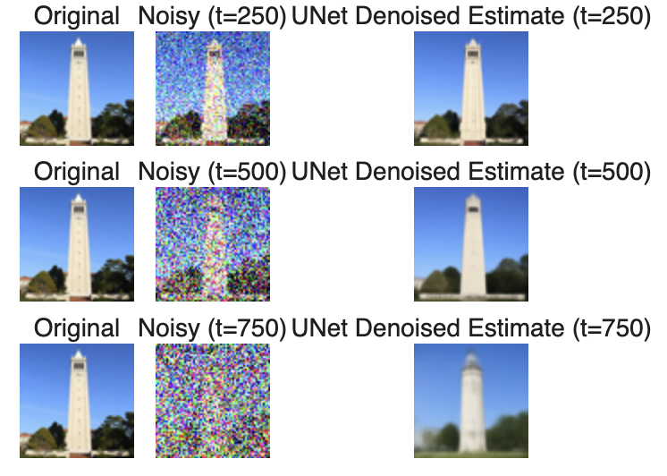
One-Step Denoising with stage_1.unet
1.4 Iterative Denoising
Moving on from one-step denoising to iterative denoising, we can now repeatedly apply the denoiser
to progressively denoise the image over multiple timesteps. First, I initialized a list of timesteps for the
strided_timesteps variable starting from 990 with a stride of 30 until we reach 0. Next, I indexed into
the alphas_cumprod array at each timestep to retrieve the corresponding alpha_cumprod and alpha_cumprod_prev values.
Then, we can compute alpha by dividing alpha_cumprod by alpha_cumprod_prev. From
there, we can find beta by calculating: 1 - alpha. Next, we can run our stage_1.unet denoiser
to find the noise estimate that we use to calculate our clean image x_0 like in our rewritten A.2 equation. With this,
we can find our noisy image at the previous timestep x_(t-1) using formula A.3 from the spec:
$$
x_{t'} = \frac{\sqrt{\bar\alpha_{t'}}\beta_t}{1 - \bar\alpha_t} x_0 +
\frac{\sqrt{\alpha_t}(1 - \bar\alpha_{t'})}{1 - \bar\alpha_t} x_t +
v_\sigma\tag{A.3}
$$
Finally, we add variance to this image using our add_variance helper function at every timestep except
for the last one.
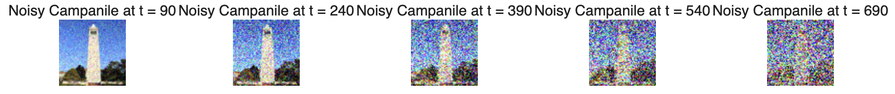
Noisy Campanile every 5th loop of denoising

Original
Iteratively Denoised Campanile
One-Step Denoised Campanile
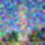
Gaussian Blurred Campanile
1.5 Diffusion Model Sampling
Beyond denoising an existing image, we can also generate new images from scratch by passing in a randomly sampled
noise image into our iterative_denoise function. This function will then iteratively denoise the random noise
image over multiple timesteps to produce a final denoised image. Below are images showing the generated images from
random noise after running the iterative denoising process for 5 samples using the prompt "a high quality photo".
Sample 1
Sample 2
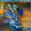
Sample 3
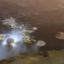
Sample 4
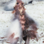
Sample 5
1.6 Classifier-Free Guidance (CFG)
In this next part, we improve our image quality (albeit at the expense of image diversity) by using CFG.
Using "a high quality photo" as our conditional prompt embedding and a the null prompt "" as our unconditional
prompt embedding, we run our UNet twice: once for both prompts. Then, using the noise estimates from our UNet,
we can compute a new noise estimate by following the CFG formula:
$$
\epsilon = \epsilon_u + \gamma
(\epsilon_c - \epsilon_u) \tag{A.4}
$$
Then we use this new noise estimate when finding our clean image x_0. Below are 5 newly sampled images on the
same prompt "a high quality photo" using our iterative_denoise_cfg function. I do notice an increase
in image quality in terms of the detail as well as the subjects in the images being
more well-defined than before. That being said, I can also understand what the spec meant by "at the expense" of
image diversity, because now all 5 images seem to photos of people for some reason.
Sample 1
Sample 2
Sample 3
Sample 4
Sample 5
1.7 Image-to-image Translation
First, we run the forward diffusion process on our Campanile image, and then input this noisy image into our
iterative_denoise_cfg function over iterations from [1, 3, 5, 7, 10, 20] steps. With each increasing
step, we get closer and closer to the original Campanile image.
SDEdit with i_start = 1
SDEdit with i_start = 3
SDEdit with i_start = 5
SDEdit with i_start = 7
SDEdit with i_start = 10
SDEdit with i_start = 20

Campanile
I also tried this on 2 of of my own images: a photo of Trouper the dog and one of my housemate's cat! Interestingly, for both images, I think the denoised outputs appeared to start to resemble the original image truly only around step 20, which is very cool to see such a big jump from all the possibilities on the natural image manifold reach the original clean image.
SDEdit with i_start = 1
SDEdit with i_start = 3
SDEdit with i_start = 5
SDEdit with i_start = 7
SDEdit with i_start = 10
SDEdit with i_start = 20
Trouper
SDEdit with i_start = 1
SDEdit with i_start = 3
SDEdit with i_start = 5
SDEdit with i_start = 7
SDEdit with i_start = 10
SDEdit with i_start = 20
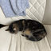
Happy (the cat!)
1.7.1 Editing Hand-Drawn and Web Images
We can also apply this editing by leveraging diffusion noisiness and CFG denoising to nonrealistic images to see what "edits" our models may make to our images to determine the original clean image from a noisy input. Here, I try this on the a watercolor painting of an orchid, as well as a handrawn image of a heart and a sun.
Watercolor Orchid
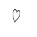
Handrawn Heart
Handrawn Sun
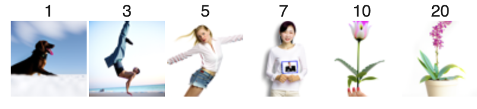
Watercolor Orchid Edits
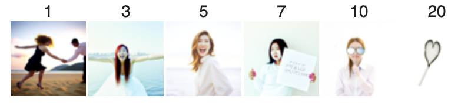
Handrawn Heart Edits
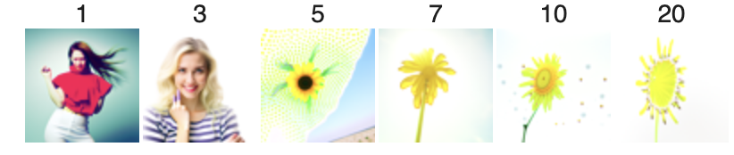
Handrawn Sun Edits
1.7.2 Inpainting
By including a binary mask, we can also selectively inpaint certain regions of an image while keeping other regions intact. To do this, I added the mask by following equation A.5 after running forward diffusion. Creating the mask itself took some trial and error to figure out the right indices for coffee and soup inpainted images, but the results were really interesting to see in terms of what the model could come up. I particularly liked the soup inpaint of having a photo on the table, which makes total sense in the context of the rest of the (unmasked) image. However, I was a bit confused by the output of the coffee inpaint because even after running many iterations, none of the outputs made that much sense. I wonder if it's because registering the hands holding the coffee cups in the original photo was too confusing or maybe not cropped at the best point given our mask is rectangular and didn't fully capture my hand as well as the entirety of my arm?
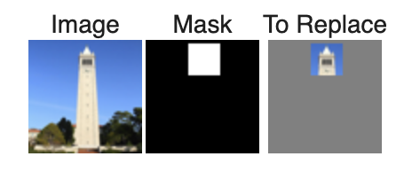
Campanile Masking
Inpainted Campanile
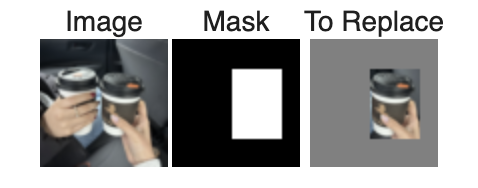
Coffee Masking
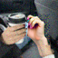
Inpainted Coffee
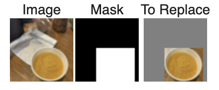
Soup Masking
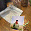
Inpainted Soup
1.7.3 Text-Conditional Image-to-image Translation
Next, to guide our projection with a text prompt, I tried edits on the same set of 3 images (Campanile, coffees, and soup) but this time with the prompt of "a cup of hot chocolate". The results were pretty interesting! For the Campanile, I can see some more festive/decorative elements than there are in the original image. With the coffee image, there seems to be more intuition because the output image looks very natural! The disposable coffee containers now appear to be mugs with toppings like marshmallows. Finally, the boul of soup also appears to have turned into a cup of coffee instead of the original image of butternut squash soup!
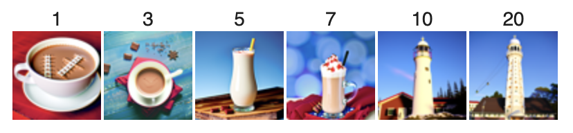
Text-Conditioned Campanile
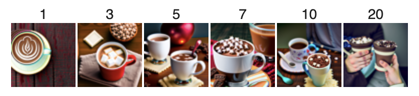
Text-Conditioned Coffee
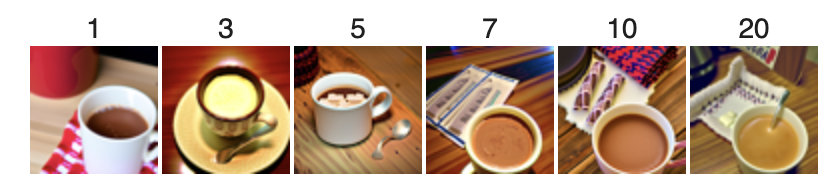
Text-Conditioned Soup
1.8 Visual Anagrams
To implement our visual_anagrams function, we can modify of our code to be compatible with
2 prompt embeddings to determine the image when upright vs. when flipped. By calculating separate noise estimates
for the upright image as well as the flipped image, we then flip the flipped noise estimate back to upright orientation,
and then take the average of the two noise estimates to use for finding our clean image x_0. Below are 2 examples
I tried: a watercolor painting of a cityscape and a mountain, as well as a 'a photo of a golden retriever and a black cat'
'an oil painting of autumn on the east coast', both of which I was really impressed by! The flipped oil painting
is actually quite painterly in style in my opinion because it avoids harsh edges/strokes.
Watercolor Mountains
Watercolor Cityscape
Golden Retriever and Black Cat
Autumn on East Coast
1.9 Hybrid Images
For another fun experiment combining images with diffusion models, we can use the make_hybrids function
to essentially perform a high pass and low pass of 2 different image prompts (using a Gaussian blur) and then
add the noise estimates from both images together to find our resulting image. Here, I tried this for a hybrid image
of a watercolor painting of a mountain and a cityscape (again HAHA) where the mountain is the low pass image
and the cityscape is the high pass image, and then a hybrid image of a baby grand piano (low pass) and a night sky (high pass).
Hybrid image of watercolor paintings of a mountain and a cityscape
Hybrid image of a baby grand piano and a night sky